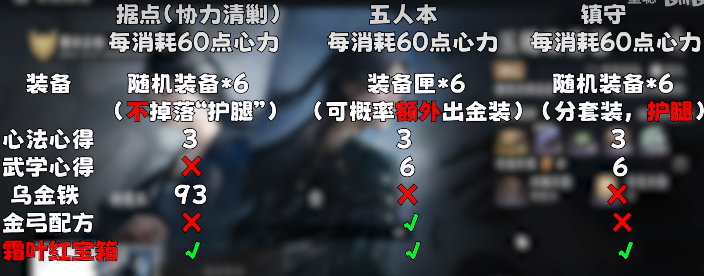

01
在新窗口打开 PDF ↗今日江湖备忘
日课周修
按你的养成目标排出优先顺序，完成状态仅保存在当前设备。
北京时间正在计算下次重置
养成目标?选择你当前最关注的成长方向
今日进度
没有符合当前筛选条件的活动。
一次性重要奖励
不可错过
用于收录错过后难以补领的任务与奖励。
内容待补充
当前工作簿尚未包含一次性奖励资料。后续可在独立数据文件中添加，无需修改页面结构。
新人入门
百业101
快速刷活跃、积累千奇珏，并把百业技艺点在真正有用的地方。
02
在新窗口打开 PDF ↗百业技艺 · 加成攻略
养成策略
心力消耗策略
心力溢出会造成资源浪费，建议优先安排消耗心力的玩法。以下为原始知识图。
